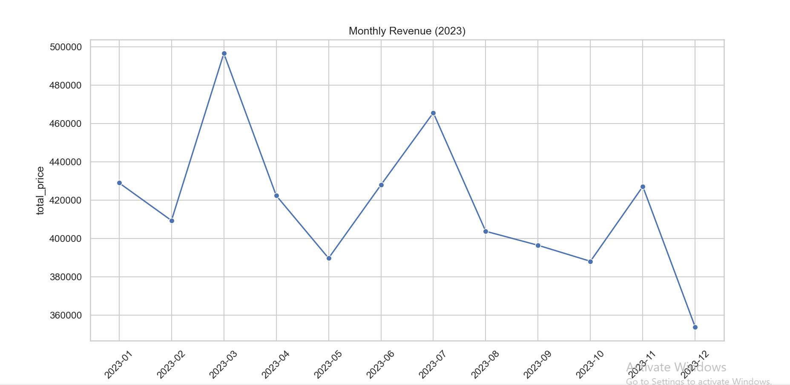
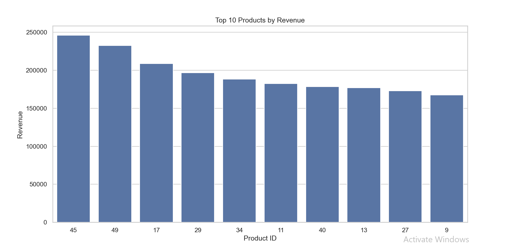
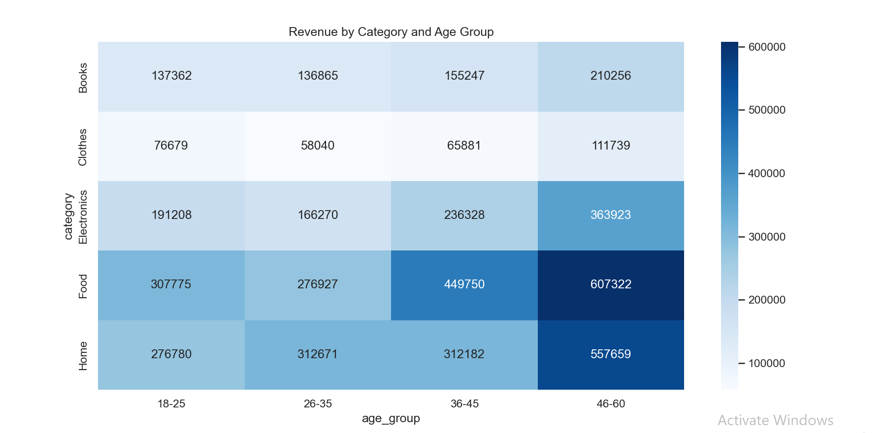
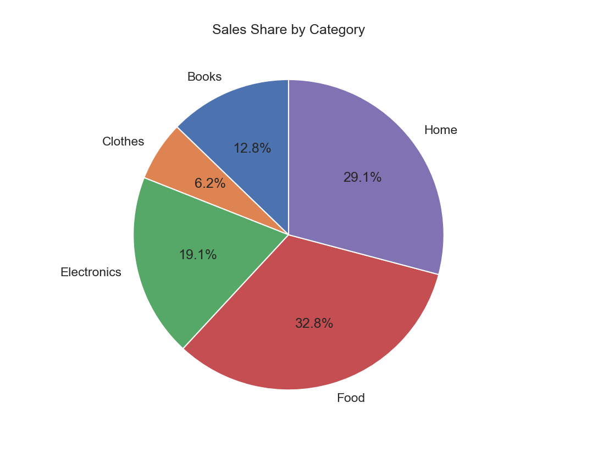

My Projects

Data Trends Analyzer
A Python tool using Matplotlib to visualize trends over time, built with Pandas for data handling.
View on GitHub

Sales Performance Tracker
Interactive bar charts showing monthly sales, integrated with NumPy for data analysis.
View on GitHub

Category Distribution Analyzer
A tool to visualize category percentages using Matplotlib, built for data insights.
View on GitHub
Multi-Category Tracker
A stacked bar chart visualization for comparing multiple data categories, using Python libraries.
View on GitHub

Data Comparison Tool
A tool for comparing datasets side by side with bar charts, built with data processing techniques.
View on GitHub